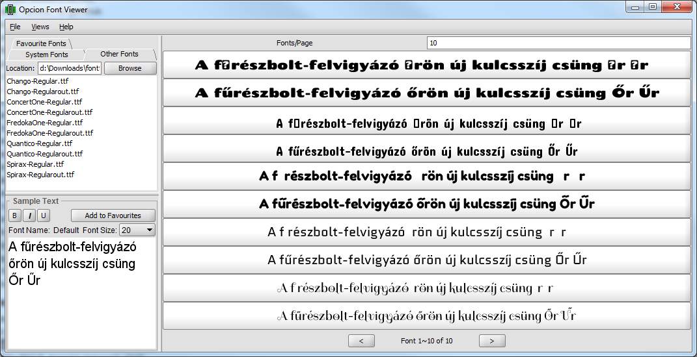

Számos latinbetűs írást használó nyelv használ különféle ékezeteket, a magyar nyelvben ezek az á, é, í, ó, ö, ő, ú, ü valamint ű betűk, illetve ezek nagybetűs változatai. Ezen betűk számos más nyelvben is megtalálhatóak, így a legtöbb betűtípus fel van készítve támogatásukra. Azoban két karakter szinte kizárólag csak a magyar nyelvben fordul elő: ezek az ő és ű betűk. Nemzetközi ritkaságuk miatt sajnos számos betűtípusból hiányzanak ezek a karakterek, amelyek miatt számos betűtípust nehezebb magyar nyelvű környezetben használni, és nem igazán t?rhet? velük az árvíz.
Szerencsére a legtőbb betűkészletben található é betű, amiből ki lehet nyerni az ékezetet, megduplázni, és ezt rátenni az o, illetve u betűkre. Az alábbi alkalmazás a FontForge segítségével végzi el automatikusan ezen műveleteket, és generál egy olyan betűtípust, amivel már tűrhető az árvíz.

A honlapon használt alkalmazás letölthető GitHubról, használatához feltelepített FontForge, vagy docker szükséges.
Az alkalmazás a feltöltött betűtípusokat nem tárolja, azokat a konverzió után a szerverről azonnal törli. Bár az eszköz használata ingyenes, érdemes megemlíteni, hogy számos betűtípus licenszfeltétele nem engedélyezi a módosítást. Mielőtt a fenti alkalmazást használnák győződjünk meg róla, hogy módosítandó betűtípus engedélyezi-e a módosításokat. Számos nyílt forráskódú betűtípus az Open Font Licence alapján engedélyezi a módosításokat, cserébe a legtöbb betűtípuskatalógusból megvásárolható készletek nem. Mielőtt használnánk a betűtípust így a konvertálás előtt érdemes engedélyt kéri a tulajdonostól, miközben érdemes azt is jelezni számára, hogy a betűkészletébe tegye bele a hiányzó ékezeteket.
Ha bármi hibát észlelsz kérlek jelezd a GitHub hibabejelentő oldalán